180 images
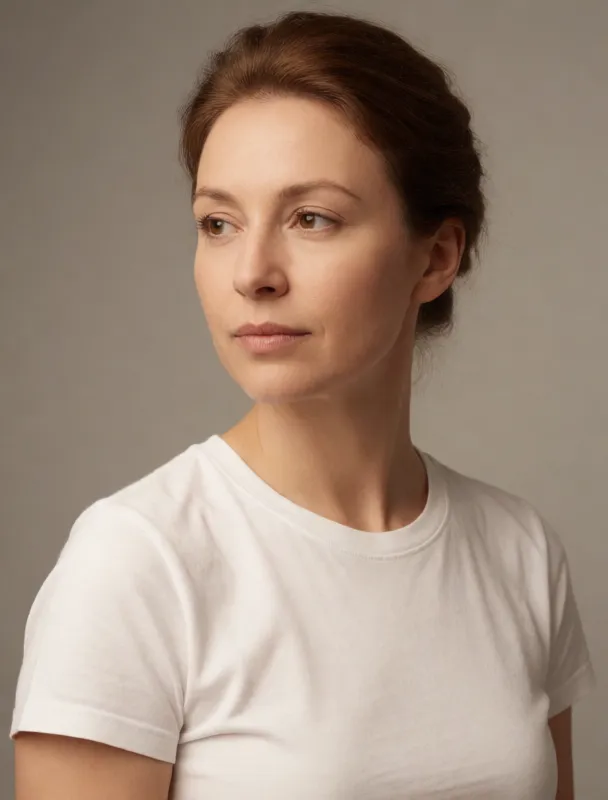
krea 2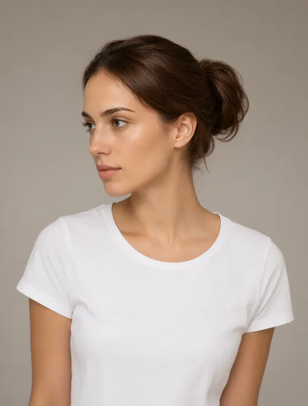
qwen image 2.1a full color studio portrait photograph in three-quarter view, framed from the shoulders up, lit by a soft diffused key light against a plain warm gray backdrop. the subject is a mixed race woman of about twenty five with light skin. her hair is chestnut brown, nihongami lacquered updo. she wears a plain white crew-neck t-shirt. she is turned three quarters toward the left side of the frame and gazes off to the left side of the frame, away from the camera.
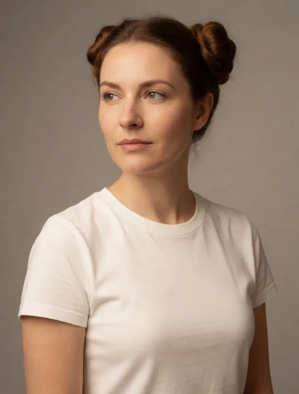
krea 2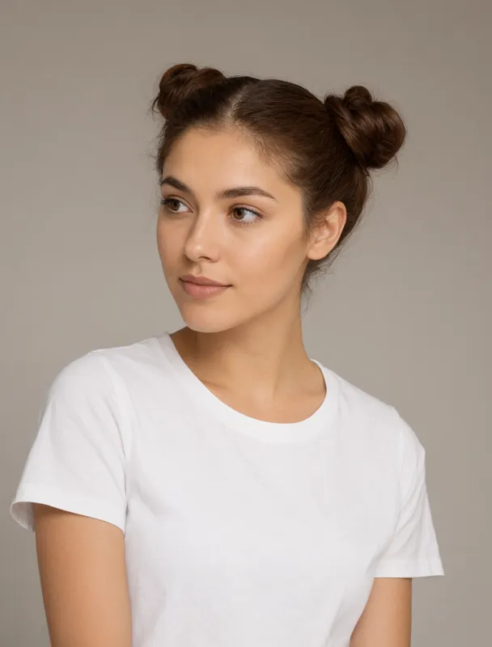
qwen image 2.1a full color studio portrait photograph in three-quarter view, framed from the shoulders up, lit by a soft diffused key light against a plain warm gray backdrop. the subject is a mixed race woman of about twenty five with light skin. her hair is chestnut brown, twin hair buns. she wears a plain white crew-neck t-shirt. she is turned three quarters toward the left side of the frame and gazes off to the left side of the frame, away from the camera.
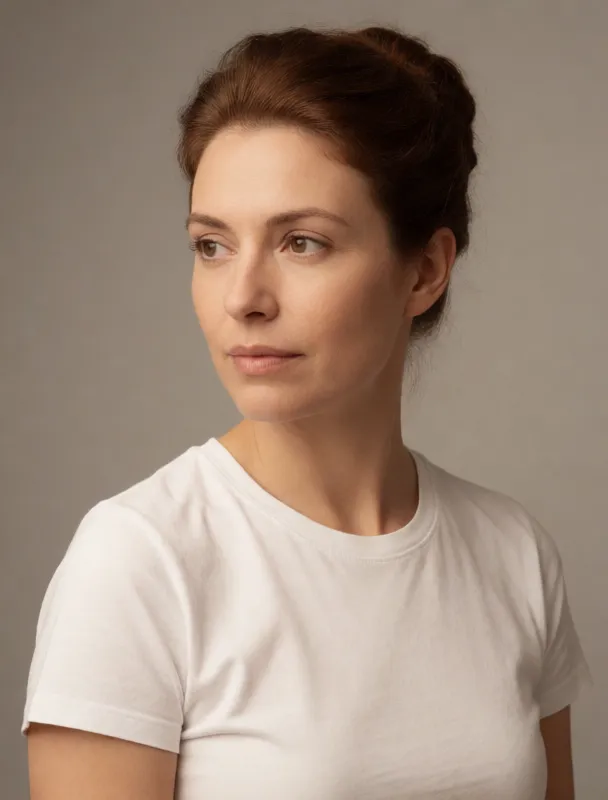
krea 2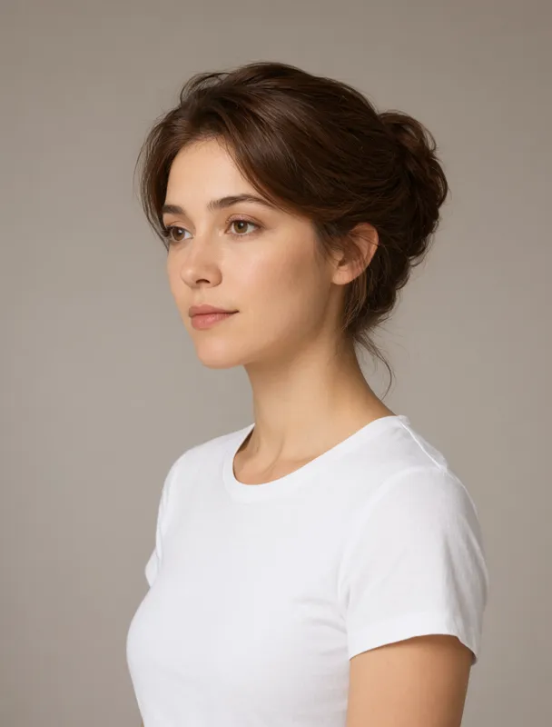
qwen image 2.1a full color studio portrait photograph in three-quarter view, framed from the shoulders up, lit by a soft diffused key light against a plain warm gray backdrop. the subject is a mixed race woman of about twenty five with light skin. her hair is chestnut brown, liangbatou winged updo. she wears a plain white crew-neck t-shirt. she is turned three quarters toward the left side of the frame and gazes off to the left side of the frame, away from the camera.
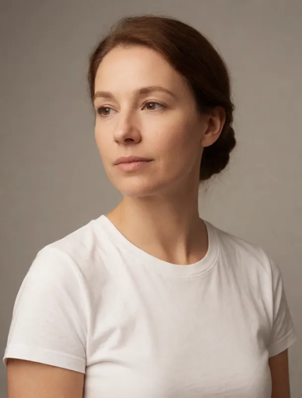
krea 2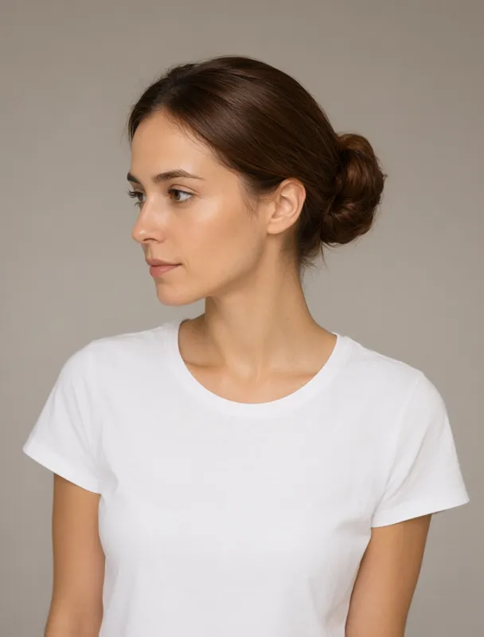
qwen image 2.1a full color studio portrait photograph in three-quarter view, framed from the shoulders up, lit by a soft diffused key light against a plain warm gray backdrop. the subject is a mixed race woman of about twenty five with light skin. her hair is chestnut brown, jjokjin-meori low chignon. she wears a plain white crew-neck t-shirt. she is turned three quarters toward the left side of the frame and gazes off to the left side of the frame, away from the camera.
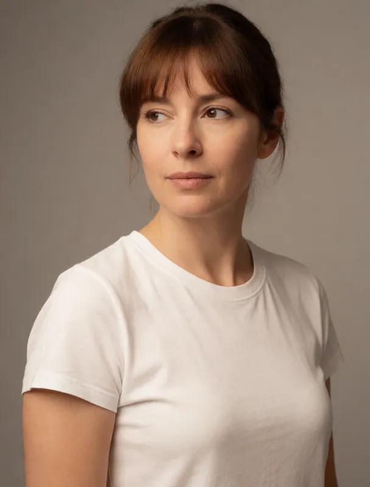
krea 2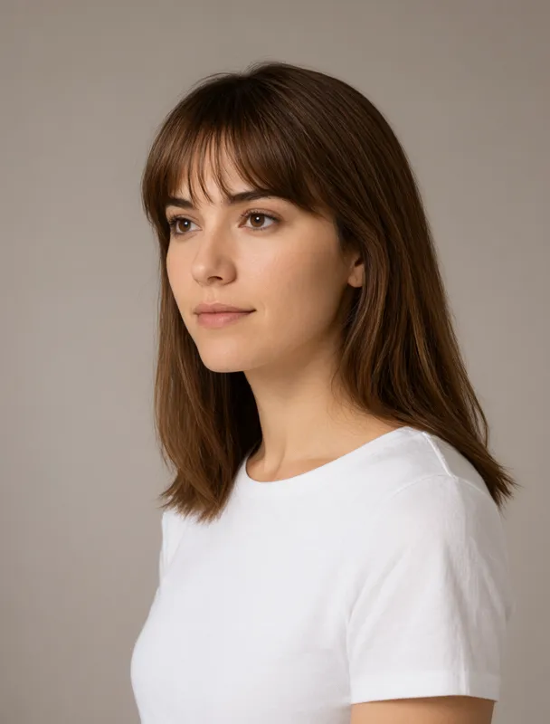
qwen image 2.1a full color studio portrait photograph in three-quarter view, framed from the shoulders up, lit by a soft diffused key light against a plain warm gray backdrop. the subject is a mixed race woman of about twenty five with light skin. her hair is chestnut brown, see-through bangs. she wears a plain white crew-neck t-shirt. she is turned three quarters toward the left side of the frame and gazes off to the left side of the frame, away from the camera.
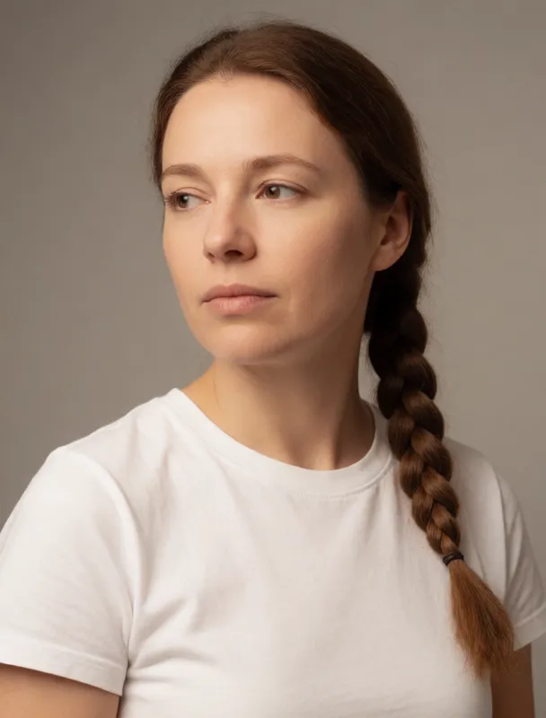
krea 2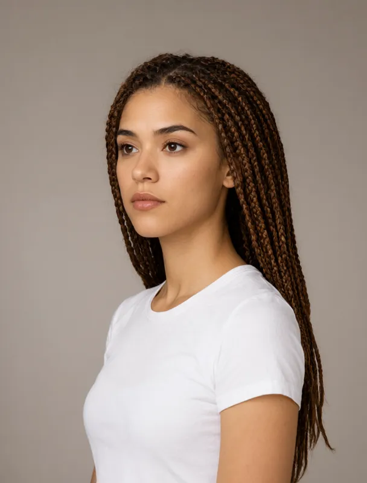
qwen image 2.1a full color studio portrait photograph in three-quarter view, framed from the shoulders up, lit by a soft diffused key light against a plain warm gray backdrop. the subject is a mixed race woman of about twenty five with light skin. her hair is chestnut brown, paranda-tasseled braid. she wears a plain white crew-neck t-shirt. she is turned three quarters toward the left side of the frame and gazes off to the left side of the frame, away from the camera.
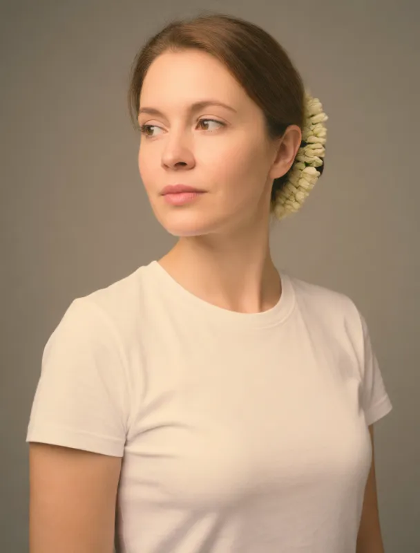
krea 2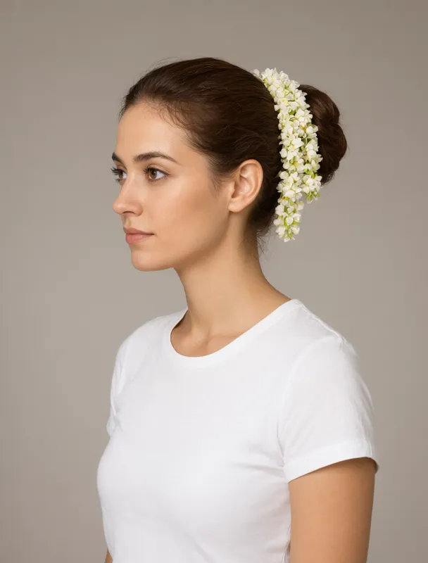
qwen image 2.1a full color studio portrait photograph in three-quarter view, framed from the shoulders up, lit by a soft diffused key light against a plain warm gray backdrop. the subject is a mixed race woman of about twenty five with light skin. her hair is chestnut brown, bun wrapped in a gajra jasmine garland. she wears a plain white crew-neck t-shirt. she is turned three quarters toward the left side of the frame and gazes off to the left side of the frame, away from the camera.
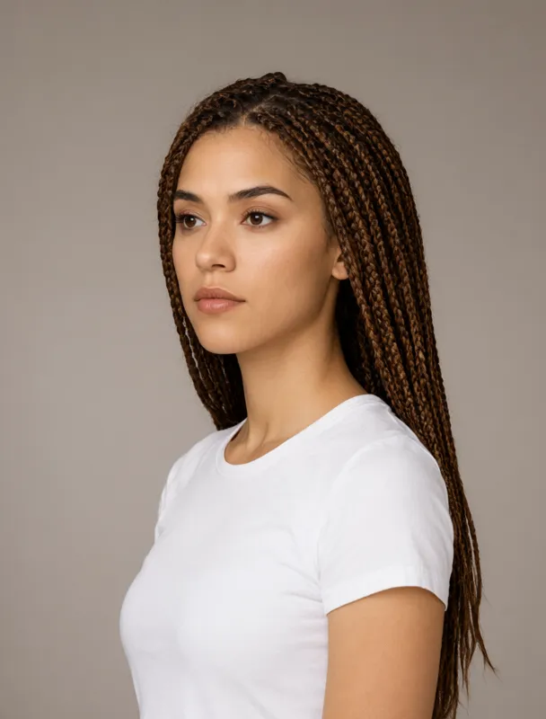
qwen image 2.1a full color studio portrait photograph in three-quarter view, framed from the shoulders up, lit by a soft diffused key light against a plain warm gray backdrop. the subject is a mixed race woman of about twenty five with light skin. her hair is chestnut brown, long oiled plait. she wears a plain white crew-neck t-shirt. she is turned three quarters toward the left side of the frame and gazes off to the left side of the frame, away from the camera.
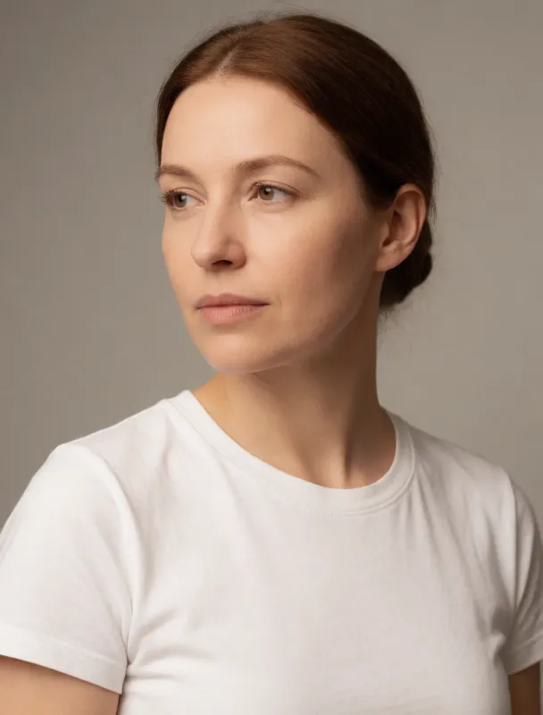
krea 2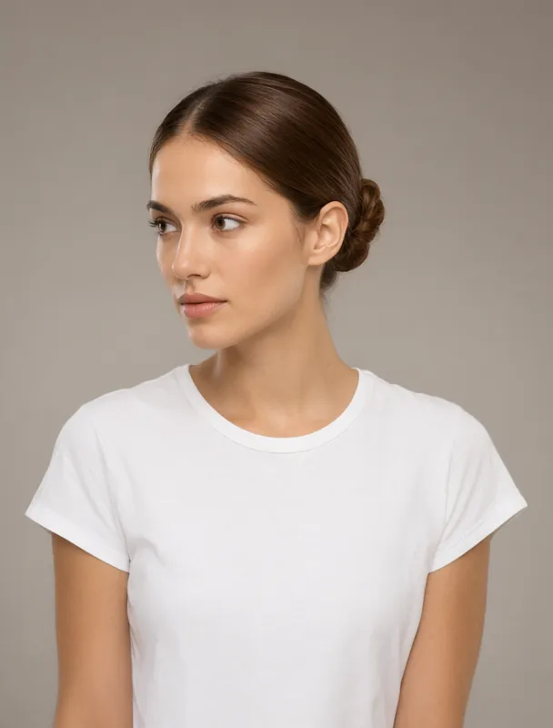
qwen image 2.1a full color studio portrait photograph in three-quarter view, framed from the shoulders up, lit by a soft diffused key light against a plain warm gray backdrop. the subject is a mixed race woman of about twenty five with light skin. her hair is chestnut brown, center-parted juda bun. she wears a plain white crew-neck t-shirt. she is turned three quarters toward the left side of the frame and gazes off to the left side of the frame, away from the camera.
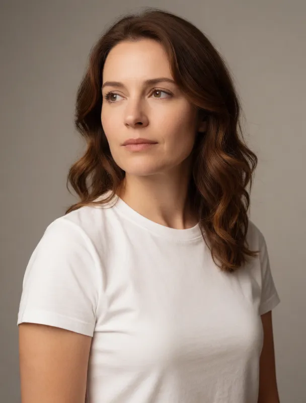
krea 2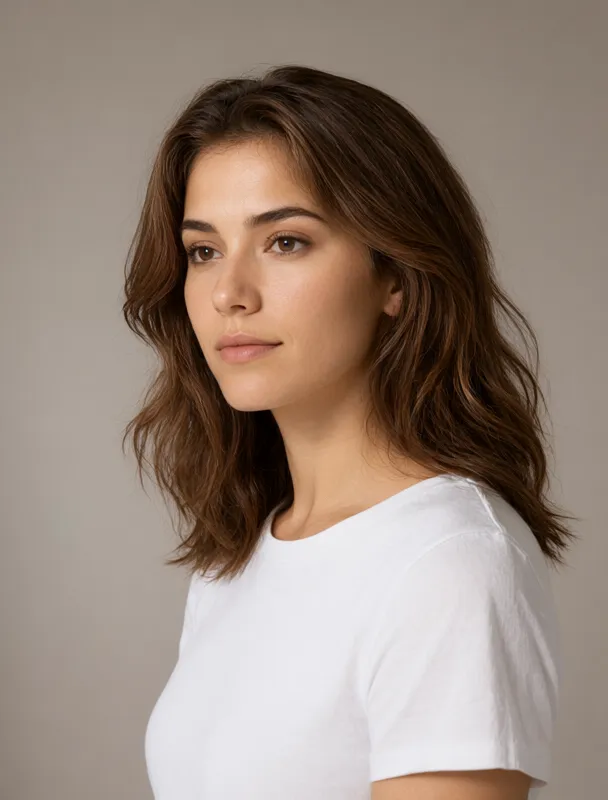
qwen image 2.1a full color studio portrait photograph in three-quarter view, framed from the shoulders up, lit by a soft diffused key light against a plain warm gray backdrop. the subject is a mixed race woman of about twenty five with light skin. her hair is chestnut brown, loose oiled waves. she wears a plain white crew-neck t-shirt. she is turned three quarters toward the left side of the frame and gazes off to the left side of the frame, away from the camera.
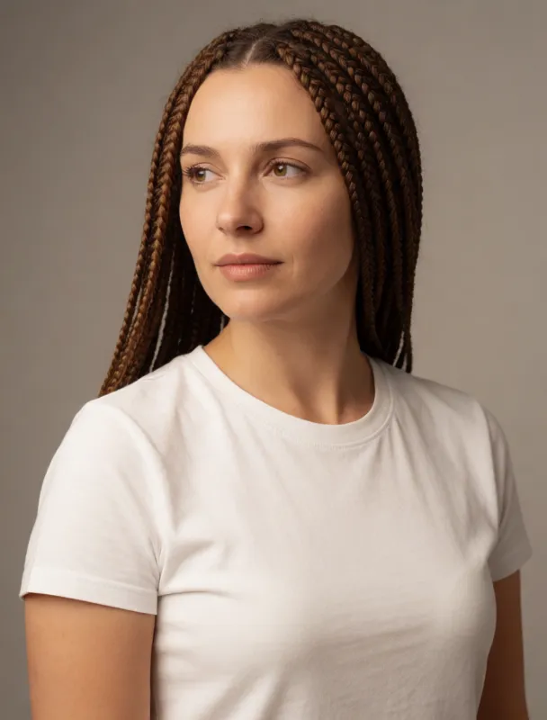
krea 2a full color studio portrait photograph in three-quarter view, framed from the shoulders up, lit by a soft diffused key light against a plain warm gray backdrop. the subject is a mixed race woman of about twenty five with light skin. her hair is chestnut brown, 108 fine braids. she wears a plain white crew-neck t-shirt. she is turned three quarters toward the left side of the frame and gazes off to the left side of the frame, away from the camera.
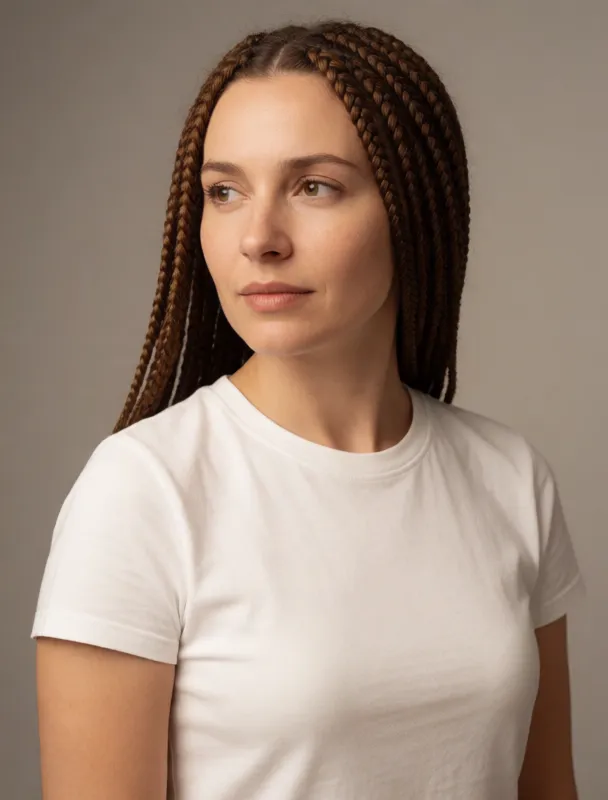
krea 2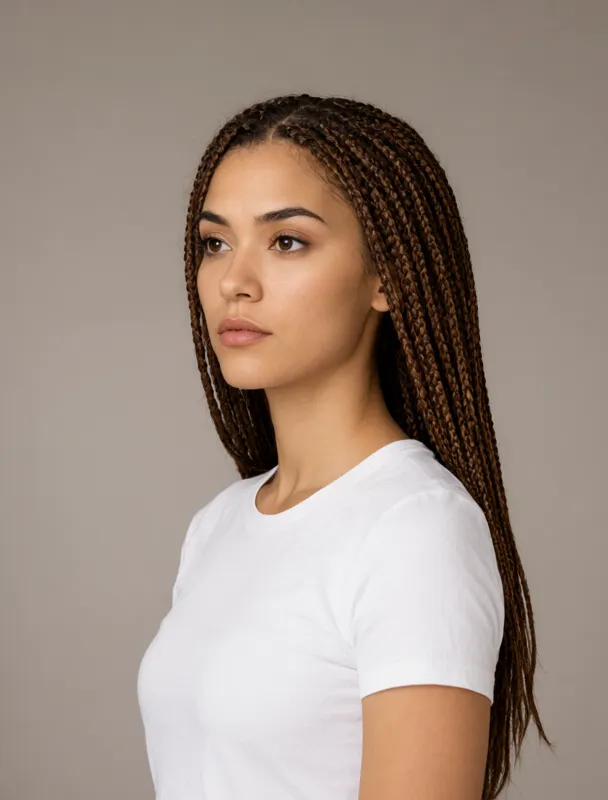
qwen image 2.1a full color studio portrait photograph in three-quarter view, framed from the shoulders up, lit by a soft diffused key light against a plain warm gray backdrop. the subject is a mixed race woman of about twenty five with light skin. her hair is chestnut brown, forty thin braids. she wears a plain white crew-neck t-shirt. she is turned three quarters toward the left side of the frame and gazes off to the left side of the frame, away from the camera.
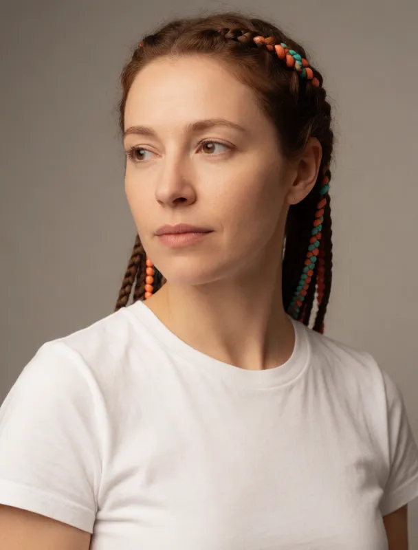
krea 2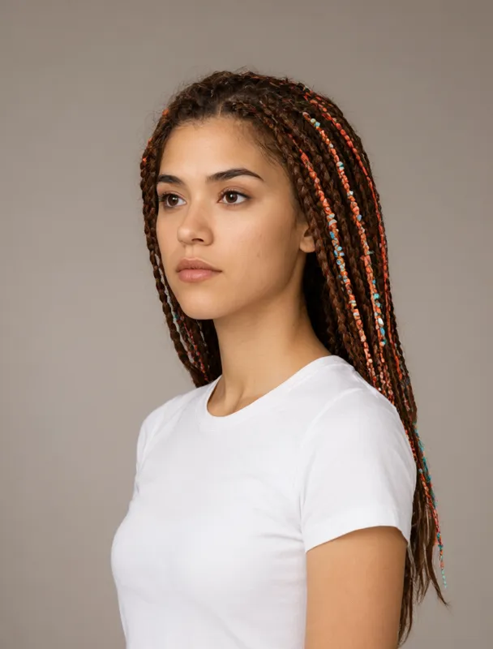
qwen image 2.1a full color studio portrait photograph in three-quarter view, framed from the shoulders up, lit by a soft diffused key light against a plain warm gray backdrop. the subject is a mixed race woman of about twenty five with light skin. her hair is chestnut brown, braids strung with coral and turquoise. she wears a plain white crew-neck t-shirt. she is turned three quarters toward the left side of the frame and gazes off to the left side of the frame, away from the camera.
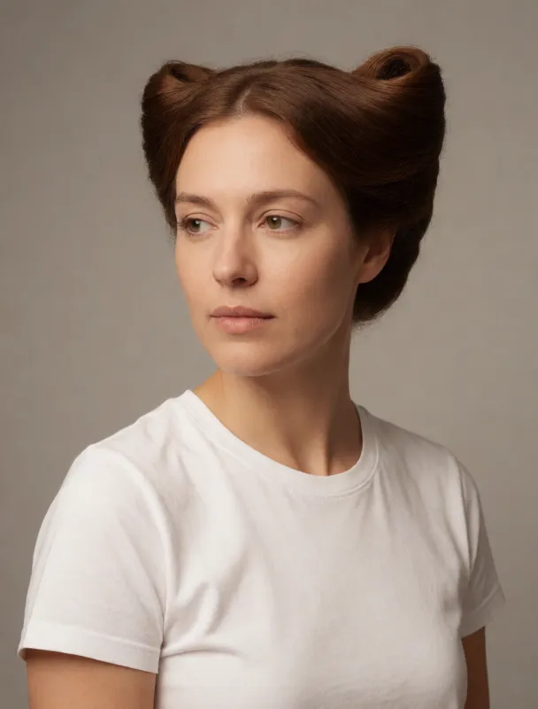
krea 2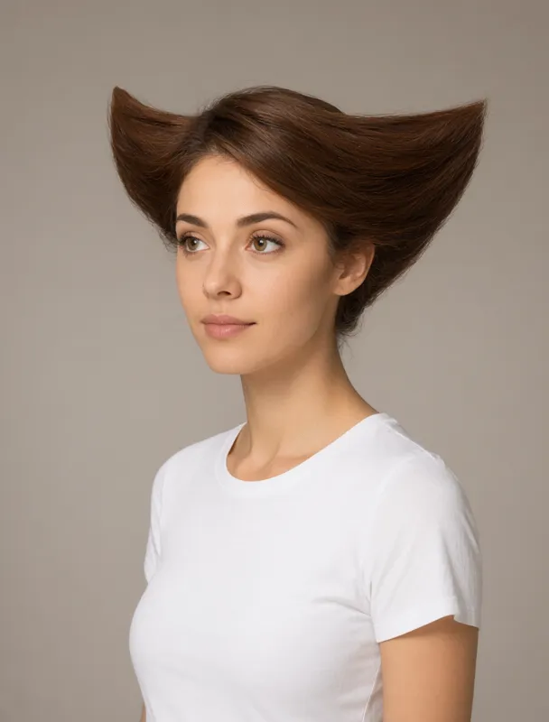
qwen image 2.1a full color studio portrait photograph in three-quarter view, framed from the shoulders up, lit by a soft diffused key light against a plain warm gray backdrop. the subject is a mixed race woman of about twenty five with light skin. her hair is chestnut brown, hair sculpted into wide horn-like wings. she wears a plain white crew-neck t-shirt. she is turned three quarters toward the left side of the frame and gazes off to the left side of the frame, away from the camera.
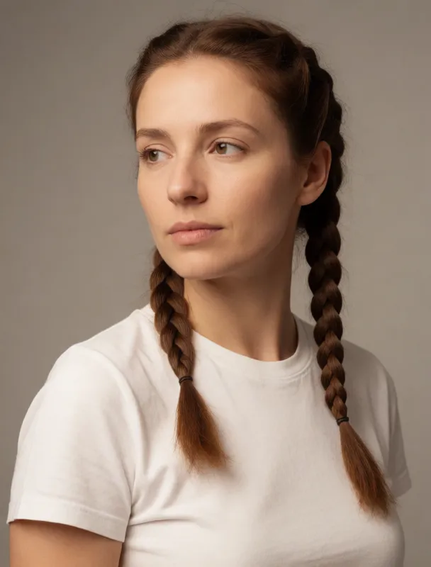
krea 2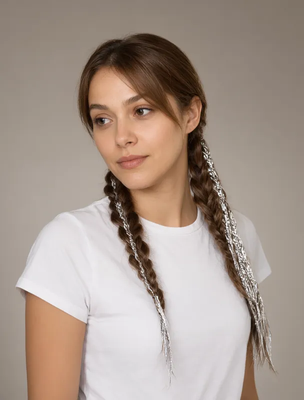
qwen image 2.1a full color studio portrait photograph in three-quarter view, framed from the shoulders up, lit by a soft diffused key light against a plain warm gray backdrop. the subject is a mixed race woman of about twenty five with light skin. her hair is chestnut brown, twin braids in silver braid covers. she wears a plain white crew-neck t-shirt. she is turned three quarters toward the left side of the frame and gazes off to the left side of the frame, away from the camera.
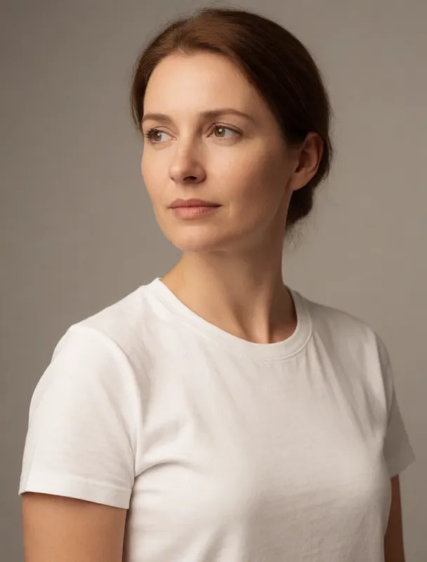
krea 2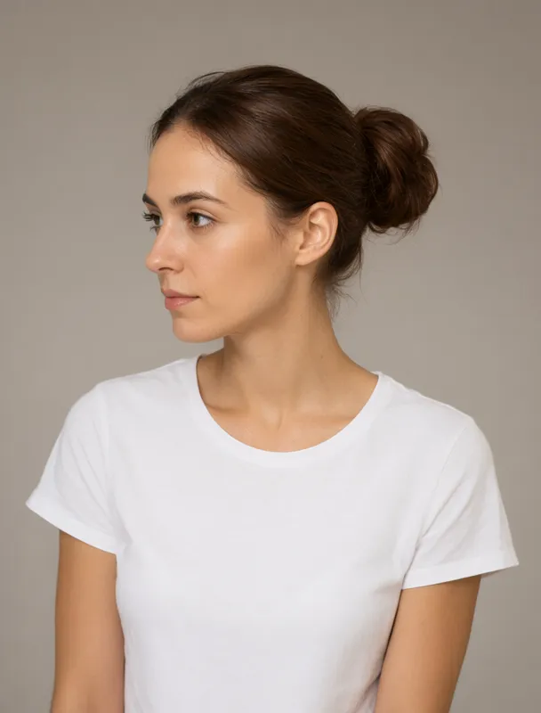
qwen image 2.1a full color studio portrait photograph in three-quarter view, framed from the shoulders up, lit by a soft diffused key light against a plain warm gray backdrop. the subject is a mixed race woman of about twenty five with light skin. her hair is chestnut brown, sanggul konde bun. she wears a plain white crew-neck t-shirt. she is turned three quarters toward the left side of the frame and gazes off to the left side of the frame, away from the camera.
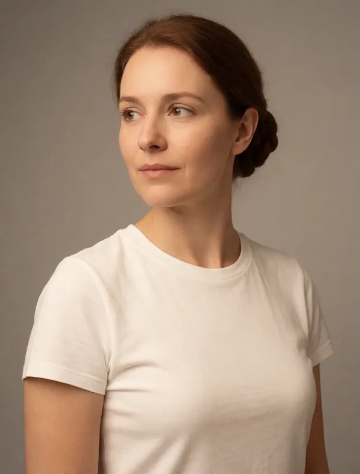
krea 2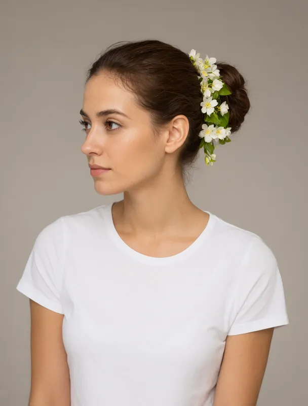
qwen image 2.1a full color studio portrait photograph in three-quarter view, framed from the shoulders up, lit by a soft diffused key light against a plain warm gray backdrop. the subject is a mixed race woman of about twenty five with light skin. her hair is chestnut brown, bun wrapped with jasmine strands. she wears a plain white crew-neck t-shirt. she is turned three quarters toward the left side of the frame and gazes off to the left side of the frame, away from the camera.
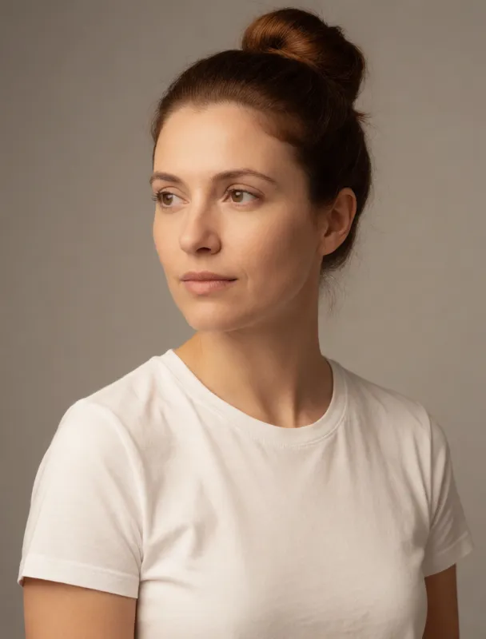
krea 2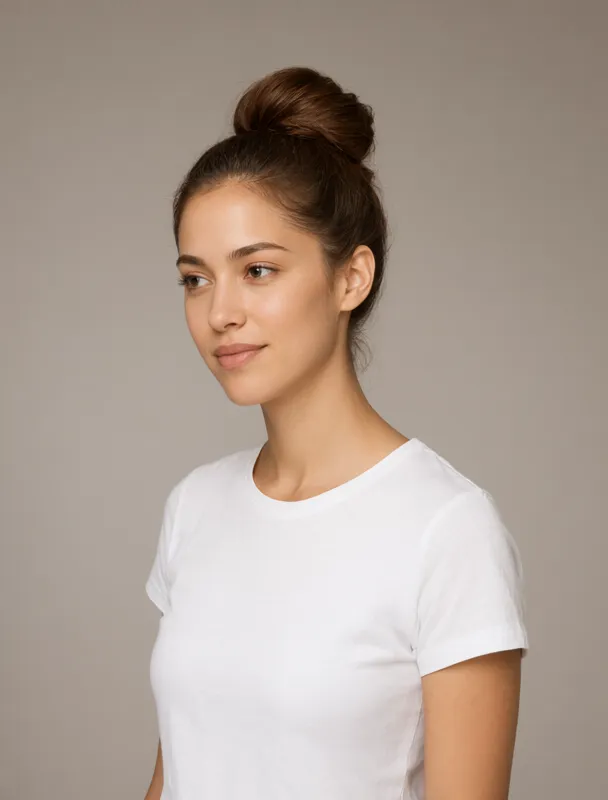
qwen image 2.1a full color studio portrait photograph in three-quarter view, framed from the shoulders up, lit by a soft diffused key light against a plain warm gray backdrop. the subject is a mixed race woman of about twenty five with light skin. her hair is chestnut brown, high bun under a chada crown. she wears a plain white crew-neck t-shirt. she is turned three quarters toward the left side of the frame and gazes off to the left side of the frame, away from the camera.
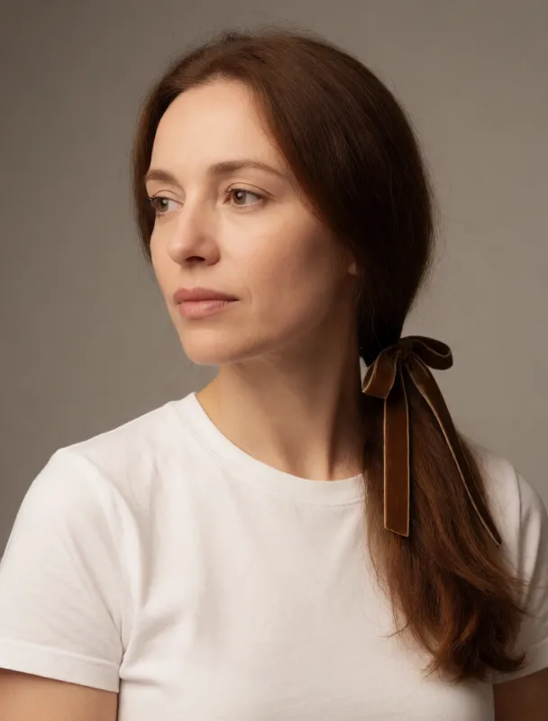
krea 2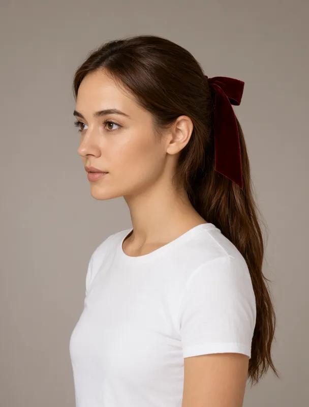
qwen image 2.1a full color studio portrait photograph in three-quarter view, framed from the shoulders up, lit by a soft diffused key light against a plain warm gray backdrop. the subject is a mixed race woman of about twenty five with light skin. her hair is chestnut brown, long hair tied with a velvet ribbon. she wears a plain white crew-neck t-shirt. she is turned three quarters toward the left side of the frame and gazes off to the left side of the frame, away from the camera.
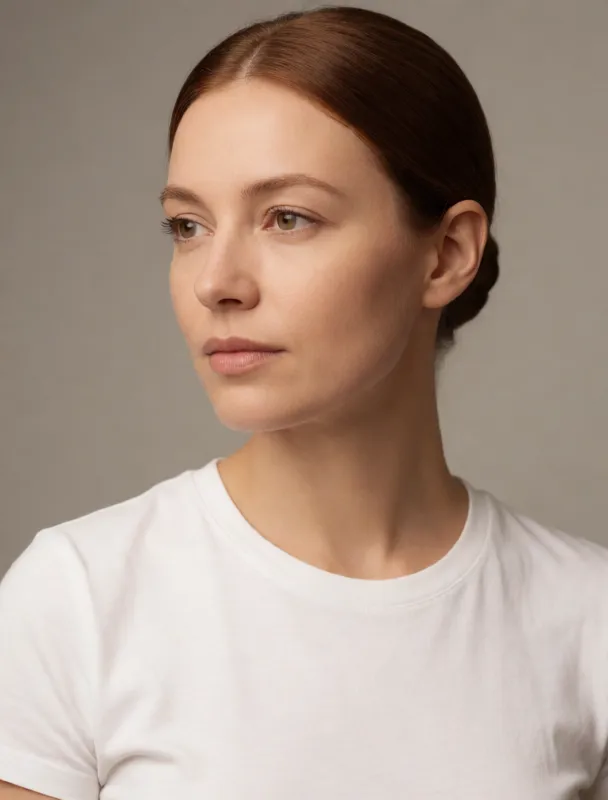
krea 2a full color studio portrait photograph in three-quarter view, framed from the shoulders up, lit by a soft diffused key light against a plain warm gray backdrop. the subject is a mixed race woman of about twenty five with light skin. her hair is chestnut brown, sleek center-parted chignon. she wears a plain white crew-neck t-shirt. she is turned three quarters toward the left side of the frame and gazes off to the left side of the frame, away from the camera.
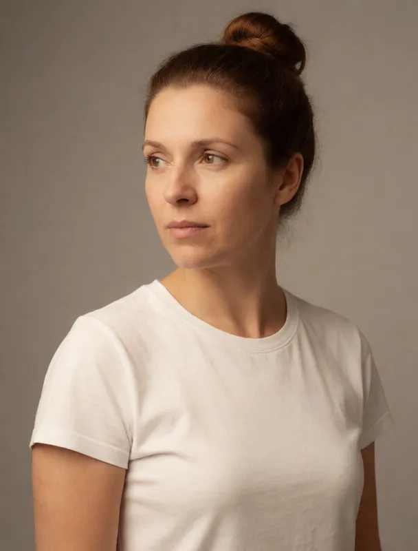
krea 2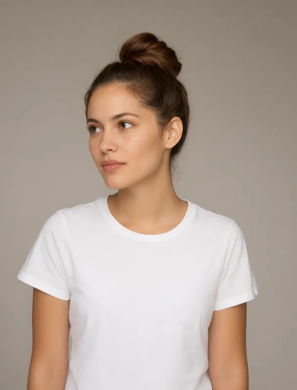
qwen image 2.1a full color studio portrait photograph in three-quarter view, framed from the shoulders up, lit by a soft diffused key light against a plain warm gray backdrop. the subject is a mixed race woman of about twenty five with light skin. her hair is chestnut brown, topknot bound with flax. she wears a plain white crew-neck t-shirt. she is turned three quarters toward the left side of the frame and gazes off to the left side of the frame, away from the camera.
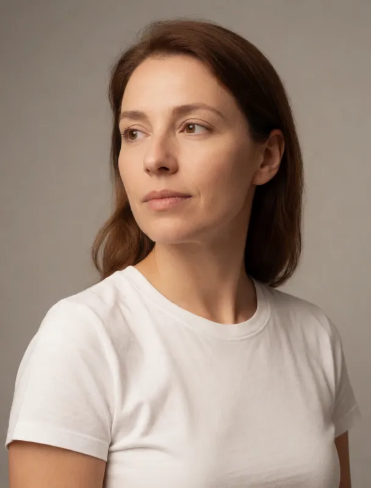
krea 2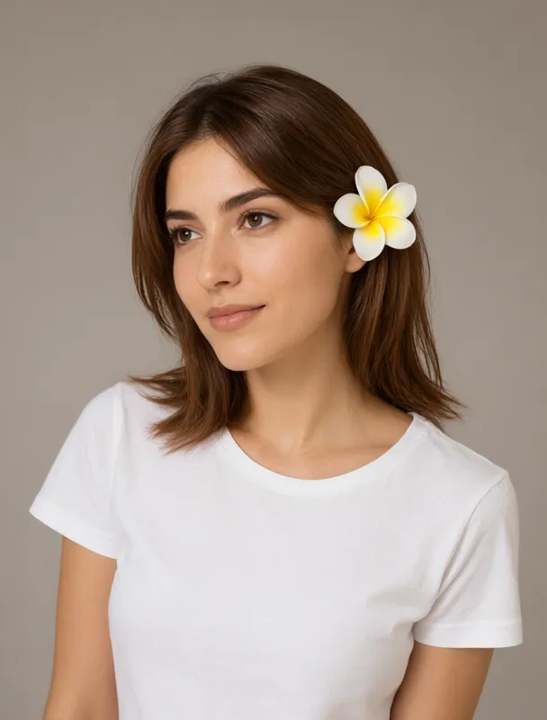
qwen image 2.1a full color studio portrait photograph in three-quarter view, framed from the shoulders up, lit by a soft diffused key light against a plain warm gray backdrop. the subject is a mixed race woman of about twenty five with light skin. her hair is chestnut brown, frangipani tucked behind her ear. she wears a plain white crew-neck t-shirt. she is turned three quarters toward the left side of the frame and gazes off to the left side of the frame, away from the camera.
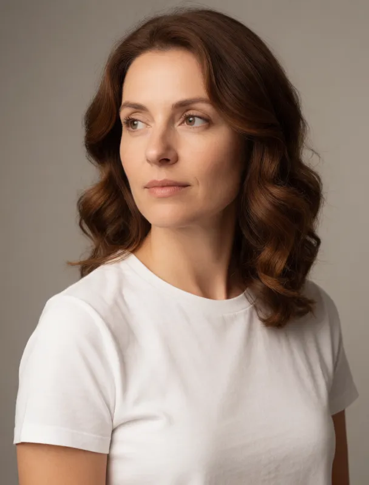
krea 2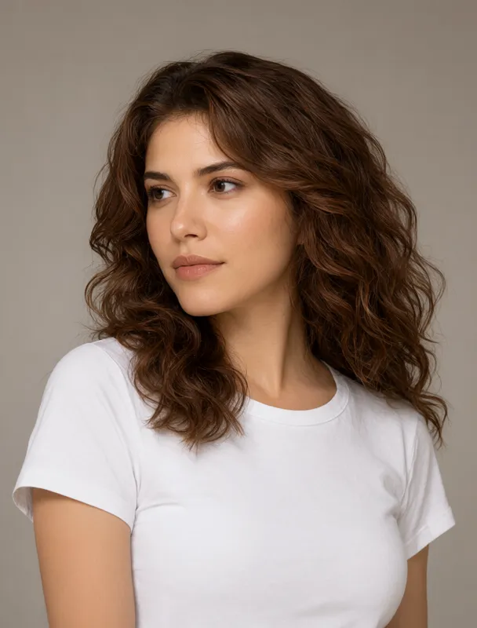
qwen image 2.1a full color studio portrait photograph in three-quarter view, framed from the shoulders up, lit by a soft diffused key light against a plain warm gray backdrop. the subject is a mixed race woman of about twenty five with light skin. her hair is chestnut brown, thick oiled waves. she wears a plain white crew-neck t-shirt. she is turned three quarters toward the left side of the frame and gazes off to the left side of the frame, away from the camera.
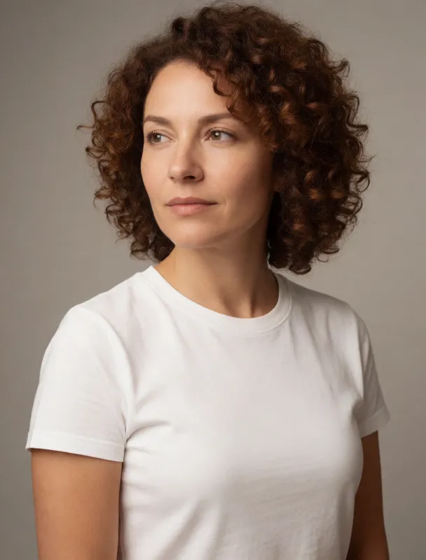
krea 2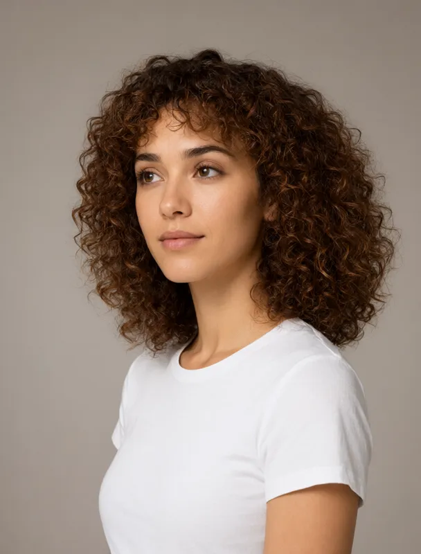
qwen image 2.1a full color studio portrait photograph in three-quarter view, framed from the shoulders up, lit by a soft diffused key light against a plain warm gray backdrop. the subject is a mixed race woman of about twenty five with light skin. her hair is chestnut brown, voluminous natural curls. she wears a plain white crew-neck t-shirt. she is turned three quarters toward the left side of the frame and gazes off to the left side of the frame, away from the camera.
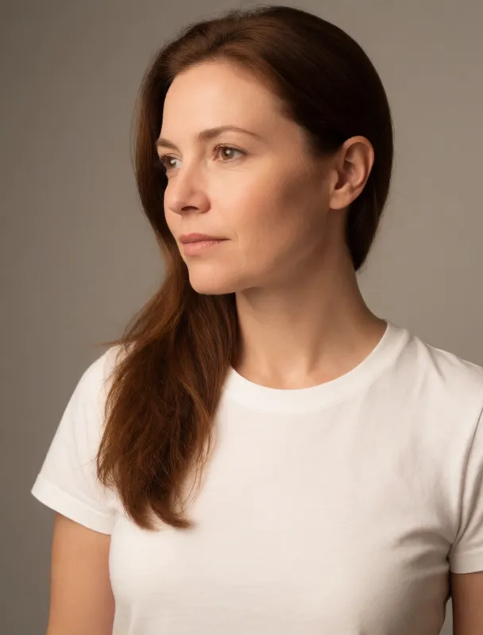
krea 2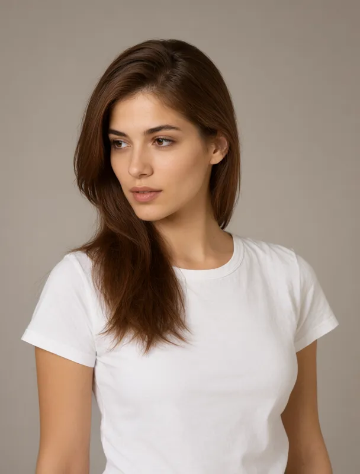
qwen image 2.1a full color studio portrait photograph in three-quarter view, framed from the shoulders up, lit by a soft diffused key light against a plain warm gray backdrop. the subject is a mixed race woman of about twenty five with light skin. her hair is chestnut brown, long hair swept to one side. she wears a plain white crew-neck t-shirt. she is turned three quarters toward the left side of the frame and gazes off to the left side of the frame, away from the camera.
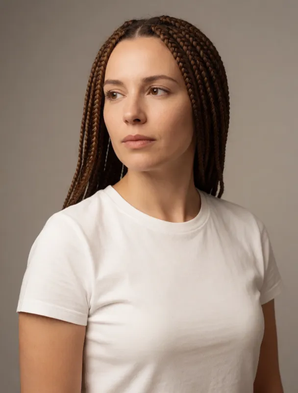
krea 2a full color studio portrait photograph in three-quarter view, framed from the shoulders up, lit by a soft diffused key light against a plain warm gray backdrop. the subject is a mixed race woman of about twenty five with light skin. her hair is chestnut brown, shuruba fine braids. she wears a plain white crew-neck t-shirt. she is turned three quarters toward the left side of the frame and gazes off to the left side of the frame, away from the camera.
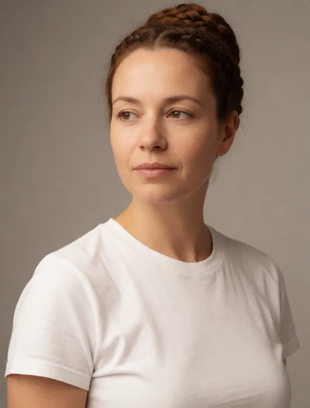
krea 2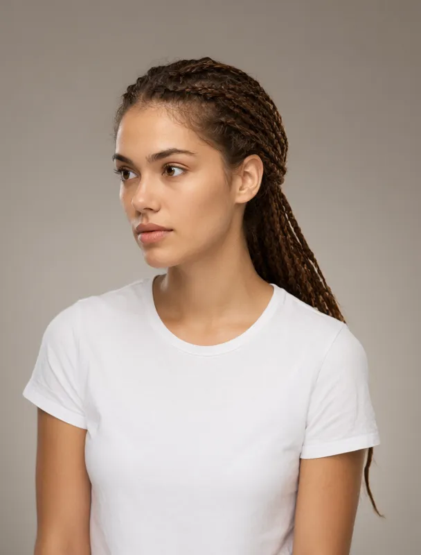
qwen image 2.1a full color studio portrait photograph in three-quarter view, framed from the shoulders up, lit by a soft diffused key light against a plain warm gray backdrop. the subject is a mixed race woman of about twenty five with light skin. her hair is chestnut brown, braids gathered at the crown. she wears a plain white crew-neck t-shirt. she is turned three quarters toward the left side of the frame and gazes off to the left side of the frame, away from the camera.
a full color studio portrait photograph in three-quarter view, framed from the shoulders up, lit by a soft diffused key light against a plain warm gray backdrop. the subject is a mixed race woman of about twenty five with light skin. her hair is chestnut brown, close-shaved head. she wears a plain white crew-neck t-shirt. she is turned three quarters toward the left side of the frame and gazes off to the left side of the frame, away from the camera.
a full color studio portrait photograph in three-quarter view, framed from the shoulders up, lit by a soft diffused key light against a plain warm gray backdrop. the subject is a mixed race woman of about twenty five with light skin. her hair is chestnut brown, rounded afro with a hair pick. she wears a plain white crew-neck t-shirt. she is turned three quarters toward the left side of the frame and gazes off to the left side of the frame, away from the camera.
a full color studio portrait photograph in three-quarter view, framed from the shoulders up, lit by a soft diffused key light against a plain warm gray backdrop. the subject is a mixed race woman of about twenty five with light skin. her hair is chestnut brown, cornrows ending in a bun. she wears a plain white crew-neck t-shirt. she is turned three quarters toward the left side of the frame and gazes off to the left side of the frame, away from the camera.
a full color studio portrait photograph in three-quarter view, framed from the shoulders up, lit by a soft diffused key light against a plain warm gray backdrop. the subject is a mixed race woman of about twenty five with light skin. her hair is chestnut brown, braids tucked under a fringed headscarf. she wears a plain white crew-neck t-shirt. she is turned three quarters toward the left side of the frame and gazes off to the left side of the frame, away from the camera.
a full color studio portrait photograph in three-quarter view, framed from the shoulders up, lit by a soft diffused key light against a plain warm gray backdrop. the subject is a mixed race woman of about twenty five with light skin. her hair is chestnut brown, center-parted loose curls. she wears a plain white crew-neck t-shirt. she is turned three quarters toward the left side of the frame and gazes off to the left side of the frame, away from the camera.
a full color studio portrait photograph in three-quarter view, framed from the shoulders up, lit by a soft diffused key light against a plain warm gray backdrop. the subject is a mixed race woman of about twenty five with light skin. her hair is chestnut brown, thin side braids framing her face. she wears a plain white crew-neck t-shirt. she is turned three quarters toward the left side of the frame and gazes off to the left side of the frame, away from the camera.
a full color studio portrait photograph in three-quarter view, framed from the shoulders up, lit by a soft diffused key light against a plain warm gray backdrop. the subject is a mixed race woman of about twenty five with light skin. her hair is chestnut brown, high curly ponytail. she wears a plain white crew-neck t-shirt. she is turned three quarters toward the left side of the frame and gazes off to the left side of the frame, away from the camera.
a full color studio portrait photograph in three-quarter view, framed from the shoulders up, lit by a soft diffused key light against a plain warm gray backdrop. the subject is a mixed race woman of about twenty five with light skin. her hair is chestnut brown, long hair in a single back plait. she wears a plain white crew-neck t-shirt. she is turned three quarters toward the left side of the frame and gazes off to the left side of the frame, away from the camera.
a full color studio portrait photograph in three-quarter view, framed from the shoulders up, lit by a soft diffused key light against a plain warm gray backdrop. the subject is a mixed race woman of about twenty five with light skin. her hair is chestnut brown, irun kiko threaded hair. she wears a plain white crew-neck t-shirt. she is turned three quarters toward the left side of the frame and gazes off to the left side of the frame, away from the camera.
a full color studio portrait photograph in three-quarter view, framed from the shoulders up, lit by a soft diffused key light against a plain warm gray backdrop. the subject is a mixed race woman of about twenty five with light skin. her hair is chestnut brown, suku braids peaked at the crown. she wears a plain white crew-neck t-shirt. she is turned three quarters toward the left side of the frame and gazes off to the left side of the frame, away from the camera.
a full color studio portrait photograph in three-quarter view, framed from the shoulders up, lit by a soft diffused key light against a plain warm gray backdrop. the subject is a mixed race woman of about twenty five with light skin. her hair is chestnut brown, fulani braids with a center cornrow. she wears a plain white crew-neck t-shirt. she is turned three quarters toward the left side of the frame and gazes off to the left side of the frame, away from the camera.
a full color studio portrait photograph in three-quarter view, framed from the shoulders up, lit by a soft diffused key light against a plain warm gray backdrop. the subject is a mixed race woman of about twenty five with light skin. her hair is chestnut brown, shuku braided crown. she wears a plain white crew-neck t-shirt. she is turned three quarters toward the left side of the frame and gazes off to the left side of the frame, away from the camera.
a full color studio portrait photograph in three-quarter view, framed from the shoulders up, lit by a soft diffused key light against a plain warm gray backdrop. the subject is a mixed race woman of about twenty five with light skin. her hair is chestnut brown, short tapered natural cut. she wears a plain white crew-neck t-shirt. she is turned three quarters toward the left side of the frame and gazes off to the left side of the frame, away from the camera.
a full color studio portrait photograph in three-quarter view, framed from the shoulders up, lit by a soft diffused key light against a plain warm gray backdrop. the subject is a mixed race woman of about twenty five with light skin. her hair is chestnut brown, bantu knots. she wears a plain white crew-neck t-shirt. she is turned three quarters toward the left side of the frame and gazes off to the left side of the frame, away from the camera.
a full color studio portrait photograph in three-quarter view, framed from the shoulders up, lit by a soft diffused key light against a plain warm gray backdrop. the subject is a mixed race woman of about twenty five with light skin. her hair is chestnut brown, otjize-coated braids. she wears a plain white crew-neck t-shirt. she is turned three quarters toward the left side of the frame and gazes off to the left side of the frame, away from the camera.
a full color studio portrait photograph in three-quarter view, framed from the shoulders up, lit by a soft diffused key light against a plain warm gray backdrop. the subject is a mixed race woman of about twenty five with light skin. her hair is chestnut brown, sculpted threaded spikes. she wears a plain white crew-neck t-shirt. she is turned three quarters toward the left side of the frame and gazes off to the left side of the frame, away from the camera.
a full color studio portrait photograph in three-quarter view, framed from the shoulders up, lit by a soft diffused key light against a plain warm gray backdrop. the subject is a mixed race woman of about twenty five with light skin. her hair is chestnut brown, afro puffs. she wears a plain white crew-neck t-shirt. she is turned three quarters toward the left side of the frame and gazes off to the left side of the frame, away from the camera.
a full color studio portrait photograph in three-quarter view, framed from the shoulders up, lit by a soft diffused key light against a plain warm gray backdrop. the subject is a mixed race woman of about twenty five with light skin. her hair is chestnut brown, shaved head with a beaded band. she wears a plain white crew-neck t-shirt. she is turned three quarters toward the left side of the frame and gazes off to the left side of the frame, away from the camera.
a full color studio portrait photograph in three-quarter view, framed from the shoulders up, lit by a soft diffused key light against a plain warm gray backdrop. the subject is a mixed race woman of about twenty five with light skin. her hair is chestnut brown, two-strand twists. she wears a plain white crew-neck t-shirt. she is turned three quarters toward the left side of the frame and gazes off to the left side of the frame, away from the camera.
a full color studio portrait photograph in three-quarter view, framed from the shoulders up, lit by a soft diffused key light against a plain warm gray backdrop. the subject is a mixed race woman of about twenty five with light skin. her hair is chestnut brown, high curly puff. she wears a plain white crew-neck t-shirt. she is turned three quarters toward the left side of the frame and gazes off to the left side of the frame, away from the camera.
a full color studio portrait photograph in three-quarter view, framed from the shoulders up, lit by a soft diffused key light against a plain warm gray backdrop. the subject is a mixed race woman of about twenty five with light skin. her hair is chestnut brown, long spiral curls. she wears a plain white crew-neck t-shirt. she is turned three quarters toward the left side of the frame and gazes off to the left side of the frame, away from the camera.
a full color studio portrait photograph in three-quarter view, framed from the shoulders up, lit by a soft diffused key light against a plain warm gray backdrop. the subject is a mixed race woman of about twenty five with light skin. her hair is chestnut brown, wash-and-go curls. she wears a plain white crew-neck t-shirt. she is turned three quarters toward the left side of the frame and gazes off to the left side of the frame, away from the camera.
a full color studio portrait photograph in three-quarter view, framed from the shoulders up, lit by a soft diffused key light against a plain warm gray backdrop. the subject is a mixed race woman of about twenty five with light skin. her hair is chestnut brown, locs piled in an updo. she wears a plain white crew-neck t-shirt. she is turned three quarters toward the left side of the frame and gazes off to the left side of the frame, away from the camera.
a full color studio portrait photograph in three-quarter view, framed from the shoulders up, lit by a soft diffused key light against a plain warm gray backdrop. the subject is a mixed race woman of about twenty five with light skin. her hair is chestnut brown, trenzas woven with listón ribbons. she wears a plain white crew-neck t-shirt. she is turned three quarters toward the left side of the frame and gazes off to the left side of the frame, away from the camera.
a full color studio portrait photograph in three-quarter view, framed from the shoulders up, lit by a soft diffused key light against a plain warm gray backdrop. the subject is a mixed race woman of about twenty five with light skin. her hair is chestnut brown, braided crown with flowers. she wears a plain white crew-neck t-shirt. she is turned three quarters toward the left side of the frame and gazes off to the left side of the frame, away from the camera.
a full color studio portrait photograph in three-quarter view, framed from the shoulders up, lit by a soft diffused key light against a plain warm gray backdrop. the subject is a mixed race woman of about twenty five with light skin. her hair is chestnut brown, yarn-wrapped braided crown. she wears a plain white crew-neck t-shirt. she is turned three quarters toward the left side of the frame and gazes off to the left side of the frame, away from the camera.
a full color studio portrait photograph in three-quarter view, framed from the shoulders up, lit by a soft diffused key light against a plain warm gray backdrop. the subject is a mixed race woman of about twenty five with light skin. her hair is chestnut brown, loose waves under a knit toque. she wears a plain white crew-neck t-shirt. she is turned three quarters toward the left side of the frame and gazes off to the left side of the frame, away from the camera.
a full color studio portrait photograph in three-quarter view, framed from the shoulders up, lit by a soft diffused key light against a plain warm gray backdrop. the subject is a mixed race woman of about twenty five with light skin. her hair is chestnut brown, bouncy blowout layers. she wears a plain white crew-neck t-shirt. she is turned three quarters toward the left side of the frame and gazes off to the left side of the frame, away from the camera.
a full color studio portrait photograph in three-quarter view, framed from the shoulders up, lit by a soft diffused key light against a plain warm gray backdrop. the subject is a mixed race woman of about twenty five with light skin. her hair is chestnut brown, braids tied with black wool tullma tassels. she wears a plain white crew-neck t-shirt. she is turned three quarters toward the left side of the frame and gazes off to the left side of the frame, away from the camera.
a full color studio portrait photograph in three-quarter view, framed from the shoulders up, lit by a soft diffused key light against a plain warm gray backdrop. the subject is a mixed race woman of about twenty five with light skin. her hair is chestnut brown, feathered carnival updo. she wears a plain white crew-neck t-shirt. she is turned three quarters toward the left side of the frame and gazes off to the left side of the frame, away from the camera.
a full color studio portrait photograph in three-quarter view, framed from the shoulders up, lit by a soft diffused key light against a plain warm gray backdrop. the subject is a mixed race woman of about twenty five with light skin. her hair is chestnut brown, slicked tango low bun. she wears a plain white crew-neck t-shirt. she is turned three quarters toward the left side of the frame and gazes off to the left side of the frame, away from the camera.
a full color studio portrait photograph in three-quarter view, framed from the shoulders up, lit by a soft diffused key light against a plain warm gray backdrop. the subject is a mixed race woman of about twenty five with light skin. her hair is chestnut brown, long blowout layers. she wears a plain white crew-neck t-shirt. she is turned three quarters toward the left side of the frame and gazes off to the left side of the frame, away from the camera.
a full color studio portrait photograph in three-quarter view, framed from the shoulders up, lit by a soft diffused key light against a plain warm gray backdrop. the subject is a mixed race woman of about twenty five with light skin. her hair is chestnut brown, wind-tousled waves. she wears a plain white crew-neck t-shirt. she is turned three quarters toward the left side of the frame and gazes off to the left side of the frame, away from the camera.
a full color studio portrait photograph in three-quarter view, framed from the shoulders up, lit by a soft diffused key light against a plain warm gray backdrop. the subject is a mixed race woman of about twenty five with light skin. her hair is chestnut brown, loose ginger ringlets. she wears a plain white crew-neck t-shirt. she is turned three quarters toward the left side of the frame and gazes off to the left side of the frame, away from the camera.
a full color studio portrait photograph in three-quarter view, framed from the shoulders up, lit by a soft diffused key light against a plain warm gray backdrop. the subject is a mixed race woman of about twenty five with light skin. her hair is chestnut brown, regency updo with framing ringlets. she wears a plain white crew-neck t-shirt. she is turned three quarters toward the left side of the frame and gazes off to the left side of the frame, away from the camera.
a full color studio portrait photograph in three-quarter view, framed from the shoulders up, lit by a soft diffused key light against a plain warm gray backdrop. the subject is a mixed race woman of about twenty five with light skin. her hair is chestnut brown, tousled windswept waves. she wears a plain white crew-neck t-shirt. she is turned three quarters toward the left side of the frame and gazes off to the left side of the frame, away from the camera.
a full color studio portrait photograph in three-quarter view, framed from the shoulders up, lit by a soft diffused key light against a plain warm gray backdrop. the subject is a mixed race woman of about twenty five with light skin. her hair is chestnut brown, long braid tied with a ribbon. she wears a plain white crew-neck t-shirt. she is turned three quarters toward the left side of the frame and gazes off to the left side of the frame, away from the camera.
a full color studio portrait photograph in three-quarter view, framed from the shoulders up, lit by a soft diffused key light against a plain warm gray backdrop. the subject is a mixed race woman of about twenty five with light skin. her hair is chestnut brown, sleek low chignon. she wears a plain white crew-neck t-shirt. she is turned three quarters toward the left side of the frame and gazes off to the left side of the frame, away from the camera.
a full color studio portrait photograph in three-quarter view, framed from the shoulders up, lit by a soft diffused key light against a plain warm gray backdrop. the subject is a mixed race woman of about twenty five with light skin. her hair is chestnut brown, crown braid. she wears a plain white crew-neck t-shirt. she is turned three quarters toward the left side of the frame and gazes off to the left side of the frame, away from the camera.
a full color studio portrait photograph in three-quarter view, framed from the shoulders up, lit by a soft diffused key light against a plain warm gray backdrop. the subject is a mixed race woman of about twenty five with light skin. her hair is chestnut brown, fishtail braid. she wears a plain white crew-neck t-shirt. she is turned three quarters toward the left side of the frame and gazes off to the left side of the frame, away from the camera.
a full color studio portrait photograph in three-quarter view, framed from the shoulders up, lit by a soft diffused key light against a plain warm gray backdrop. the subject is a mixed race woman of about twenty five with light skin. her hair is chestnut brown, long braids with silver beads. she wears a plain white crew-neck t-shirt. she is turned three quarters toward the left side of the frame and gazes off to the left side of the frame, away from the camera.
a full color studio portrait photograph in three-quarter view, framed from the shoulders up, lit by a soft diffused key light against a plain warm gray backdrop. the subject is a mixed race woman of about twenty five with light skin. her hair is chestnut brown, white-blonde flowing hair. she wears a plain white crew-neck t-shirt. she is turned three quarters toward the left side of the frame and gazes off to the left side of the frame, away from the camera.
a full color studio portrait photograph in three-quarter view, framed from the shoulders up, lit by a soft diffused key light against a plain warm gray backdrop. the subject is a mixed race woman of about twenty five with light skin. her hair is chestnut brown, dutch braids. she wears a plain white crew-neck t-shirt. she is turned three quarters toward the left side of the frame and gazes off to the left side of the frame, away from the camera.
a full color studio portrait photograph in three-quarter view, framed from the shoulders up, lit by a soft diffused key light against a plain warm gray backdrop. the subject is a mixed race woman of about twenty five with light skin. her hair is chestnut brown, messy french bob with bangs. she wears a plain white crew-neck t-shirt. she is turned three quarters toward the left side of the frame and gazes off to the left side of the frame, away from the camera.
a full color studio portrait photograph in three-quarter view, framed from the shoulders up, lit by a soft diffused key light against a plain warm gray backdrop. the subject is a mixed race woman of about twenty five with light skin. her hair is chestnut brown, low chignon. she wears a plain white crew-neck t-shirt. she is turned three quarters toward the left side of the frame and gazes off to the left side of the frame, away from the camera.
a full color studio portrait photograph in three-quarter view, framed from the shoulders up, lit by a soft diffused key light against a plain warm gray backdrop. the subject is a mixed race woman of about twenty five with light skin. her hair is chestnut brown, gretchen braid crown. she wears a plain white crew-neck t-shirt. she is turned three quarters toward the left side of the frame and gazes off to the left side of the frame, away from the camera.
a full color studio portrait photograph in three-quarter view, framed from the shoulders up, lit by a soft diffused key light against a plain warm gray backdrop. the subject is a mixed race woman of about twenty five with light skin. her hair is chestnut brown, bardot bouffant with bangs. she wears a plain white crew-neck t-shirt. she is turned three quarters toward the left side of the frame and gazes off to the left side of the frame, away from the camera.
a full color studio portrait photograph in three-quarter view, framed from the shoulders up, lit by a soft diffused key light against a plain warm gray backdrop. the subject is a mixed race woman of about twenty five with light skin. her hair is chestnut brown, long hair with curtain bangs. she wears a plain white crew-neck t-shirt. she is turned three quarters toward the left side of the frame and gazes off to the left side of the frame, away from the camera.
a full color studio portrait photograph in three-quarter view, framed from the shoulders up, lit by a soft diffused key light against a plain warm gray backdrop. the subject is a mixed race woman of about twenty five with light skin. her hair is chestnut brown, slicked flamenco bun with a caracol curl. she wears a plain white crew-neck t-shirt. she is turned three quarters toward the left side of the frame and gazes off to the left side of the frame, away from the camera.
a full color studio portrait photograph in three-quarter view, framed from the shoulders up, lit by a soft diffused key light against a plain warm gray backdrop. the subject is a mixed race woman of about twenty five with light skin. her hair is chestnut brown, sleek center-parted low bun. she wears a plain white crew-neck t-shirt. she is turned three quarters toward the left side of the frame and gazes off to the left side of the frame, away from the camera.
a full color studio portrait photograph in three-quarter view, framed from the shoulders up, lit by a soft diffused key light against a plain warm gray backdrop. the subject is a mixed race woman of about twenty five with light skin. her hair is chestnut brown, tousled sun-lightened waves. she wears a plain white crew-neck t-shirt. she is turned three quarters toward the left side of the frame and gazes off to the left side of the frame, away from the camera.
a full color studio portrait photograph in three-quarter view, framed from the shoulders up, lit by a soft diffused key light against a plain warm gray backdrop. the subject is a mixed race woman of about twenty five with light skin. her hair is chestnut brown, voluminous brunette curls. she wears a plain white crew-neck t-shirt. she is turned three quarters toward the left side of the frame and gazes off to the left side of the frame, away from the camera.
a full color studio portrait photograph in three-quarter view, framed from the shoulders up, lit by a soft diffused key light against a plain warm gray backdrop. the subject is a mixed race woman of about twenty five with light skin. her hair is chestnut brown, braided greek goddess updo. she wears a plain white crew-neck t-shirt. she is turned three quarters toward the left side of the frame and gazes off to the left side of the frame, away from the camera.
a full color studio portrait photograph in three-quarter view, framed from the shoulders up, lit by a soft diffused key light against a plain warm gray backdrop. the subject is a mixed race woman of about twenty five with light skin. her hair is chestnut brown, long kosa plait tied with a ribbon. she wears a plain white crew-neck t-shirt. she is turned three quarters toward the left side of the frame and gazes off to the left side of the frame, away from the camera.
a full color studio portrait photograph in three-quarter view, framed from the shoulders up, lit by a soft diffused key light against a plain warm gray backdrop. the subject is a mixed race woman of about twenty five with light skin. her hair is chestnut brown, braids coiled over her ears. she wears a plain white crew-neck t-shirt. she is turned three quarters toward the left side of the frame and gazes off to the left side of the frame, away from the camera.
a full color studio portrait photograph in three-quarter view, framed from the shoulders up, lit by a soft diffused key light against a plain warm gray backdrop. the subject is a mixed race woman of about twenty five with light skin. her hair is chestnut brown, long waves with coin strands. she wears a plain white crew-neck t-shirt. she is turned three quarters toward the left side of the frame and gazes off to the left side of the frame, away from the camera.
a full color studio portrait photograph in three-quarter view, framed from the shoulders up, lit by a soft diffused key light against a plain warm gray backdrop. the subject is a mixed race woman of about twenty five with light skin. her hair is chestnut brown, braided updo under a headscarf. she wears a plain white crew-neck t-shirt. she is turned three quarters toward the left side of the frame and gazes off to the left side of the frame, away from the camera.
a full color studio portrait photograph in three-quarter view, framed from the shoulders up, lit by a soft diffused key light against a plain warm gray backdrop. the subject is a mixed race woman of about twenty five with light skin. her hair is chestnut brown, ballerina high bun. she wears a plain white crew-neck t-shirt. she is turned three quarters toward the left side of the frame and gazes off to the left side of the frame, away from the camera.
a full color studio portrait photograph in three-quarter view, framed from the shoulders up, lit by a soft diffused key light against a plain warm gray backdrop. the subject is a mixed race woman of about twenty five with light skin. her hair is chestnut brown, waist-length thick waves. she wears a plain white crew-neck t-shirt. she is turned three quarters toward the left side of the frame and gazes off to the left side of the frame, away from the camera.
a full color studio portrait photograph in three-quarter view, framed from the shoulders up, lit by a soft diffused key light against a plain warm gray backdrop. the subject is a mixed race woman of about twenty five with light skin. her hair is chestnut brown, hair under a loose silk headscarf. she wears a plain white crew-neck t-shirt. she is turned three quarters toward the left side of the frame and gazes off to the left side of the frame, away from the camera.
a full color studio portrait photograph in three-quarter view, framed from the shoulders up, lit by a soft diffused key light against a plain warm gray backdrop. the subject is a mixed race woman of about twenty five with light skin. her hair is chestnut brown, blown-out voluminous curls. she wears a plain white crew-neck t-shirt. she is turned three quarters toward the left side of the frame and gazes off to the left side of the frame, away from the camera.
a full color studio portrait photograph in three-quarter view, framed from the shoulders up, lit by a soft diffused key light against a plain warm gray backdrop. the subject is a mixed race woman of about twenty five with light skin. her hair is chestnut brown, twin long georgian braids. she wears a plain white crew-neck t-shirt. she is turned three quarters toward the left side of the frame and gazes off to the left side of the frame, away from the camera.
a full color studio portrait photograph in three-quarter view, framed from the shoulders up, lit by a soft diffused key light against a plain warm gray backdrop. the subject is a mixed race woman of about twenty five with light skin. her hair is chestnut brown, half-up with a center part. she wears a plain white crew-neck t-shirt. she is turned three quarters toward the left side of the frame and gazes off to the left side of the frame, away from the camera.